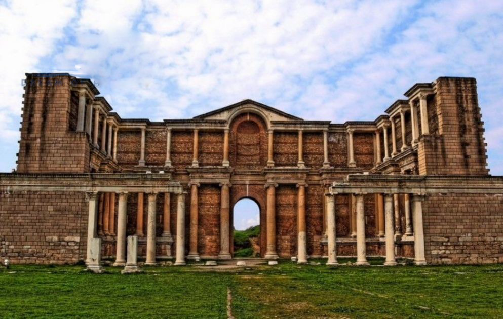

İzmir’den sonra Ege Bölgesi’nin en büyük ikinci şehri olan Manisa’nın 1.367.905 kişilik nüfusu, şehrin merkezi ve 17 ilçesiyle 13.269 kilometrekarelik bir alana yayılır. Şifalı Mesir Macunu ve Sultaniye Üzümü ile meşhur olan Manisa, İzmir'e yakınlığının da sağladığı avantajla hızlı gelişen şehirlerimiz arasındadır. Her ne kadar şehir dağlarla çevrili olsa da Gediz Ovası’nın bereketli topraklarının da etkisiyle tarımsal üretim sıralamasında ilk üç ilden biridir. Yüzyıllardan beri devam edendokumacılık, gıda, dericilik ve tarım konusunda faaliyet gösteren Manisa’da bugün önemli gelir kaynağı sanayidir. Bölgede bulunan Vestel, Bosch, ECA, Ülker ya da Eczacıbaşı fabrikaları, şehrin Türkiye’deki büyük organize sanayi bölgelerinden biri olmasını sağlar. Bu da zaman içinde yoğun göç almasına sebep olmuştur.
Haziran, temmuz ve ağustos aylarında 40 dereceye kadar yükselen sıcaklık sebebiyle ün salmış Mesir Festivali ya da Cirit Festivali gibi etkinliklerin yüzde 90’ı ilkbahar ve sonbahar aylarında gerçekleştirilmektedir. Haliyle turistler de Manisa’yı gezmek için bu ayları tercih etmektedir.
Tarihi kaynaklar bugünkü Yunanistan’ın Tesalya Bölgesi'ndeki Pelion Dağı civarında yaşayan Magnetleri, Manisa’nın kurucusu olarak göstermektedir. Verimli topraklarıyla tarih boyunca pek çok medeniyetin ilgisini çeken Manisa’da Hititler, Frigler, Yunanlar, Lidyalılar, İranlılar, Romalılar, Bizanslılar, Saruhanoğulları ve Osmanlılar hâkim olmuştur. Lidya bölgesi olarak bilinen alanın çoğunluğu Manisa’da olduğundan il sınırları içinde Sardes başta olmak üzere 20’den fazla antik kent mevcuttur. Osmanlı döneminde, şehirde yer alan Manisa Sancağı’nın geleceğin padişahlarına yönetimi öğrenmelerini sağlaması, buranın hâlâ Şehzadeler Şehri olarak anılmasına vesiledir. Osmanlı İmparatorluğu için şehir, 1437 ile 1595 yılları arasında Saruhan Sancağı olarak şehzadelerin yetiştirildiği önemli bir sancaktır. Bu dönemlerde şehre çok sayıda camii, çeşme, imalathane yaptırılarak dönemin sosyal ve ekonomik açıdan önemli bir merkezi haline gelmiştir. Osmanlı'nın 16 şehzadesi burada sancak beyliği yapmıştır. Süleyman Çelebi, Mehmet, Mustafa, Abdullah, Alemşah, Korkut, Mahmut, Yavuz Selim, Mustafa, 2. Selim, 3. Murat, 3. Mehmet bunlardan başlıcalarıdır. Manisa sancağında şehzadeler devlet yönetimi, dini-manevi dersler ve spor eğitimi alırlardı. Bu sporların içinde at binmek, ok atmak, yüzmek, kılıç kuşanmak, güreş tutmak vardı. Onlara eşlik eden Lalalar, şehzadenin manevi ve siyasi eğitimini üstlenen danışmanları görevini yapıyorlardı.
Tarihte önemli bir konuma sahip olan kent Homeros'un anlatılarına göre Truva Savaşı'ndan dönenler tarafından MÖ 14. yüzyılda kurulmuştu. Antik Çağ'daki adı Magnesia olan Manisa Spil Dağı ile Gediz Nehri arasında bulunur ve yerleşik hayat oldukça eskilere dayanır. Lidya Uygarlığı'nın en önemli şehirleri bugünki Manisa sınırlarında yer alır. Tarihte ilk altın parayı basan Lidyalıların başkenti Salihli'deki Sardes Antik Kenti'dir. Sart beldesi sınırlarında bulunan Sardes, sikkenin doğum yeri ve ismi zenginlikle özdeşleşmik Karun'un doğum yeridir. Günümüze kadar korunmuş olan İon benzeri düzene sahip bir tapınak, hamam ve gimnasyon ile antik dünyanın en büyük havrasına sahip bir kenttir Sardes. Sadece bu antik kent, Lidya Uygarlığı ile doğrudan ilişkilendirilmiştir. Lidyalıların mezarlık alanı olan Lidya tümülüsleri ise dünyanın en büyük tümülüs alanıdır. bu tümülüsler Marmara Gölü'nün güney kenarında yer alır ve Bin Tepeler olarak bilinir.
Şehzadeler şehri Manisa'da eşsiz tabiat güzellikleri arasındaki Spil Dağı, Ağlayan Kaya, Kula Peribacaları, Kurşunlu Kaplıcaları ve tarihî önemi olan Manisa Kalesi, Muradiye Camii, İvaz Paşa Camii, Sardes Antik Kenti, Thyateria gezilecek başlıca yerlerdir. Kentin tarihî ve kültürel geçmişine şahit olmak için lahitler, büstler ve mezar taşları ile dolu olan Manisa Müzesi mutlaka ziyaret edilmeli.
İlginizi çekebilir: